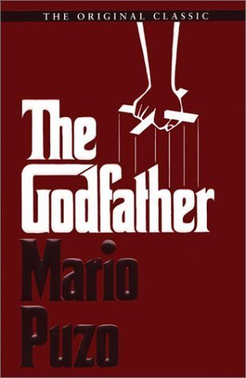
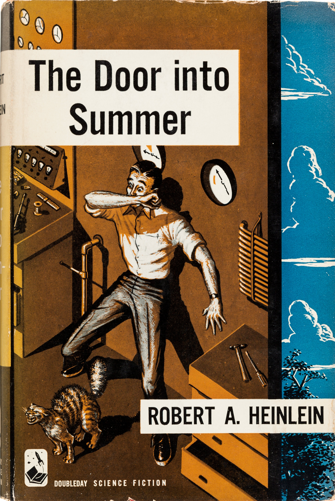
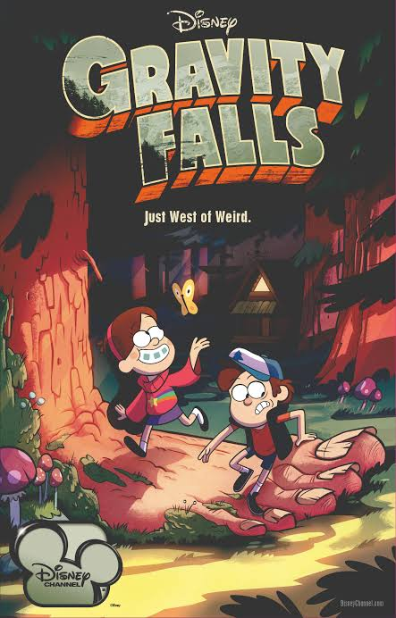

Мовчання ягнят
Досить цікавий детектив ,який удже легко читається

Привіт! Я студентка факультету прикладної математики та інформатики. У цьому портфоліо я зібрала багато цікавої інформації про свої навчання, захоплення та цілі. Сподіваюся, вам буде цікаво дізнатися про мене більше!
Моя школа запам'яталась хорошими викладачами ,які завжди були готові допомогти,якщо щось було незрозуміло,дружнім класом і великою кількістю творчої діяльності
Прикладна математик та інформатика
3 курс
Цей предмет добре розвиває логіку та деякі частини з нього можна було використовувати в подальшому в програмуванні
Цей предмет був цікавим ,тому що він пояснював методи розв'язання різних задач лінійної алгебри за допомогою алгоритмів
Ця дисципліна була цікавою тим,що можна було дізнатись про використання ймовірності в різних сферах а також ,наприклад,візуалізувати якісь статистичні дані і проаналізувати їх
Робота з с++
Розробка ігор на Godot
Адаптивність
Командна робота
Доброта

Досить цікавий детектив ,який удже легко читається

Дуже страшна книга ,яка навчила мене відпускати минуле
<
Цікавий роман,про сицилійську мафію про правила і закони в цьому суспільстві

Дуже зворушливий твір ,який розкриває тему стосунків

Дуже цікава фанстачтика,яку дуже неважко читати.А ще там один з головних героїв котик

5/5

4/5

5/5

4/5
З 2015 року займаюсь волонтерством в громадській організації "Ніжність. Допомагаю дітям з фізичними вадами та безпосередньо аутизмом соціалізуватись та розвиватись в творчості,кулінарії та інших сферах"
Більше року навчаю дітей. Викладаю математику. Проводжу індивідуальні та групові заняття


Хочу розвиватися у створенні ігор та музичній діяльності.
Небеса не мають улюбленців.
— Еріх Марія Ремарк
| День тижня | Час | Назва дисципліни | Тип заняття |
|---|---|---|---|
| Понеділок | 8:30 – 9:50 | Архітектура комп'ютерних систем та мереж | Лекція |
| 10:10 – 11:30 | Чисельні методи | Лекція | |
| 11:50 – 13:10 | Історія рок-музики | Лекція | |
| Вівторок | 8:30 – 9:50 | Використання систем комп'ютерної математики | Лекція |
| 10:10 – 11:30 | Використання систем комп'ютерної математики | Практика | |
| Середа | 8:30 – 9:50 | Програмне забезпечення | Практика |
| 10:10 – 11:30 | Бази даних та інформаційні системи | Практика | |
| 11:50 – 13:10 | Основи веб програмування | Лекція | |
| 13:30 – 14:50 | Основи веб програмування | Практика | |
| Четвер | 8:30 – 9:50 | Бази даних та інформаційні системи | Лекція |
| 10:10 – 11:30 | Архітектура комп'ютерних систем та мереж | Практика | |
| 11:50 – 13:10 | Історія рок-музики | Практика | |
| П'ятниця | 8:30 – 9:50 | Програмне забезпечення | Лекція |
| 10:10 – 11:30 | Чисельні методи | Практика |
Telegram: @idnwinj
GitHub: idnwinj